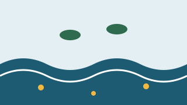
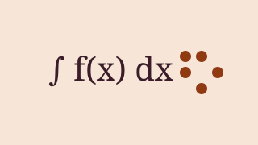
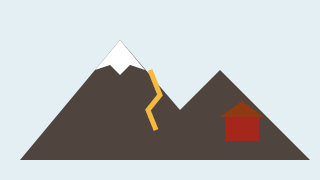
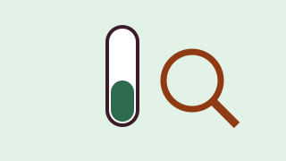

Proteggere i neonati dai virus respiratori
Gruppo NeoVir
Dipartimento di Scienze della Sanità Pubblica e Pediatriche, Università di Torino
In corso · mancano 5 giorni (scade il )
€ 6.720 raccolti su € 8.000 (84%) · 188 sostenitori
4 progetti in corso · 6 conclusi
Mostrati 10 di 10 progetti
Gruppo NeoVir
Dipartimento di Scienze della Sanità Pubblica e Pediatriche, Università di Torino
In corso · mancano 5 giorni (scade il )
€ 6.720 raccolti su € 8.000 (84%) · 188 sostenitori

Gruppo ApiLab
Dipartimento di Scienze Veterinarie, Università di Torino
Obiettivo raggiunto · puoi ancora sostenerlo per 20 giorni (scade il )
€ 7.800 raccolti su € 6.000 (130%) · 142 sostenitori

Gruppo EcoMente
Dipartimento di Psicologia, Università di Torino
In corso · mancano 26 giorni (scade il )
€ 4.575 raccolti su € 7.500 (61%) · 131 sostenitori

Gruppo Aria Aperta
Dipartimento di Informatica, Università di Torino
In corso · mancano 33 giorni (scade il )
€ 2.350 raccolti su € 5.000 (47%) · 79 sostenitori

Gruppo Voci del Piemonte
Dipartimento di Studi Umanistici, Università di Torino
Conclusa · obiettivo non raggiunto
€ 3.100 raccolti su € 5.000 (62%) · 102 sostenitori

Gruppo PlastiBio
Dipartimento di Biotecnologie Molecolari e Scienze per la Salute, Università di Torino
Conclusa · obiettivo raggiunto
€ 11.200 raccolti su € 8.000 (140%) · 251 sostenitori

Gruppo MathAccess
Dipartimento di Matematica «Giuseppe Peano», Università di Torino
Conclusa · obiettivo raggiunto
€ 7.020 raccolti su € 6.000 (117%) · 166 sostenitori

Gruppo GeoAlp
Dipartimento di Scienze della Terra, Università di Torino
Conclusa · obiettivo non raggiunto
€ 3.720 raccolti su € 6.000 (62%) · 97 sostenitori

Gruppo Scienza di quartiere
Dipartimento di Filosofia e Scienze dell'Educazione, Università di Torino
Conclusa · obiettivo raggiunto
€ 5.450 raccolti su € 5.000 (109%) · 139 sostenitori
Gruppo CareBot
Dipartimento di Informatica, Università di Torino
Conclusa · obiettivo raggiunto
€ 9.040 raccolti su € 8.000 (113%) · 204 sostenitori
Nessun progetto corrisponde alla ricerca e ai filtri scelti. Prova ad azzerare i filtri oppure guarda tutti i progetti in corso.
Hai visto tutti i progetti di questa selezione.